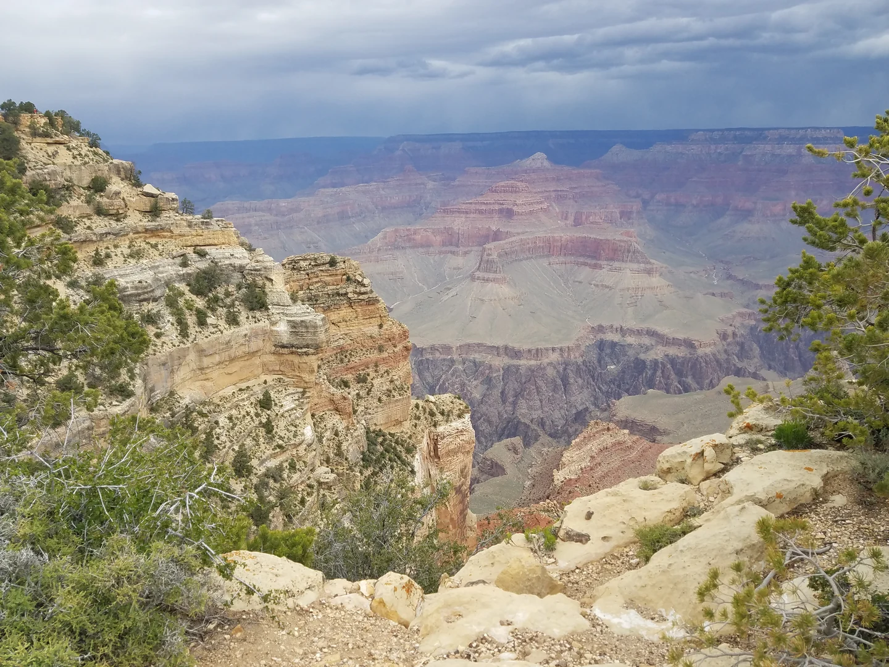

Неустановившееся движение упругой жидкости в упругом пласте. Метод ПССС
Уроки (60) · Задания (141)
Книжные главы по геологии и геофизике с пояснениями, заданиями и видеоразборами.

Уроки (60) · Задания (141)
Уроки (56) · Задания (134)
Уроки (34) · Задания (81)